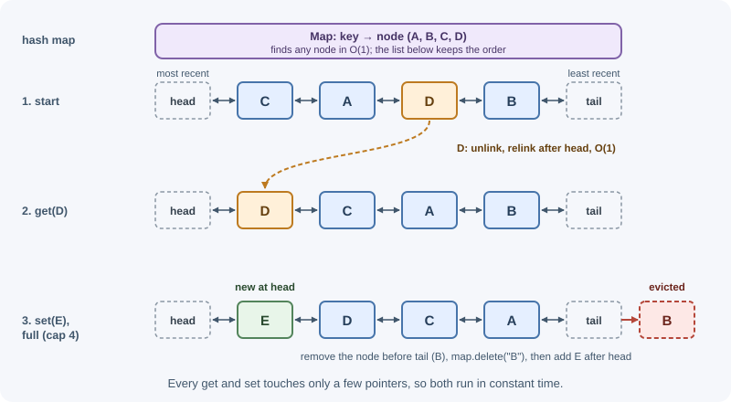
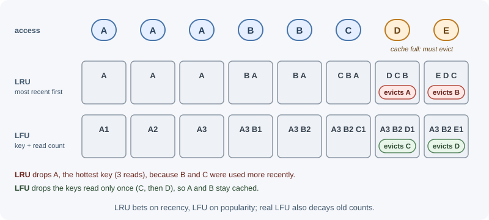

Eviction Policies¶
A cache has limited memory. When it is full and a new entry must be
stored, an eviction policy decides which existing entry to remove.
Common policies are LRU (least recently used), LFU (least frequently
used), FIFO, random, and TTL-based eviction. Redis exposes these choices
through its maxmemory-policy setting.
Why it matters¶
The eviction policy decides which data stays in the cache, and therefore the hit ratio. The wrong policy can push out exactly the data that is reused most, or, in Redis, make writes fail with out-of-memory errors. Eviction is different from expiration: expiration removes entries whose TTL has passed; eviction removes entries early because memory ran out.
Real-world usage¶
- Redis recommends
allkeys-lruas a starting point. The Redis key eviction guide callsallkeys-lru"a good default option" when a subset of keys is accessed far more often than the rest, and explains that Redis approximates LRU by sampling keys and keeping a pool of good eviction candidates. - Managed Redis can have a different default. Open-source Redis
defaults to
noeviction, but Amazon ElastiCache's parameter groups listvolatile-lruas the defaultmaxmemory-policy. Code that stores keys without TTLs behaves differently on the two. - Caffeine combines frequency and recency. The Java caching library Caffeine offers size-based eviction "based on frequency and recency", and its README points to the research behind its policy, including the TinyLFU admission policy paper.
- Redis added an "LRM" policy. Since Redis 8.6,
allkeys-lrmandvolatile-lrmevict the least recently modified keys: only writes update the timestamp, so frequently read but rarely updated data can be told apart from data that is actively changing.
How it works¶
Expiration compared with eviction¶
| Expiration | Eviction | |
|---|---|---|
| Trigger | The entry's TTL passed | Memory limit reached |
| Chooses | Exactly the expired entry | A victim chosen by the policy |
| Happens even with free memory | Yes | No |
| Signal | Normal; data aged out | The cache may be too small |
A healthy cache mostly expires entries. Constant eviction means the working set does not fit.
LRU: least recently used¶
LRU removes the entry that has gone unused the longest, assuming recently used data will be used again soon (temporal locality). It is the most widely used general-purpose policy.
The classic O(1) implementation combines:
- a hash map from key to node, for O(1) lookup, and
- a doubly linked list ordered by recency, for O(1) moves and removal.

LFU: least frequently used¶
LFU removes the entry with the lowest access count, assuming popular data stays popular. It protects long-term hot keys from being pushed out by a burst of one-time reads (for example a batch job scanning many keys once), which would flush an LRU cache.

Its weakness is history: an item that was popular last week can keep a high count forever. Practical LFU implementations therefore decay counts over time.
FIFO, random, and TTL-based¶
- FIFO (first in, first out): evicts the oldest inserted entry regardless of use. Simple, but evicts hot entries just because they are old.
- Random: evicts any entry. Surprisingly reasonable when access is roughly uniform, and very cheap.
- TTL-based (shortest time to live first): evicts entries closest to expiring, since they would disappear soon anyway.
Comparison¶
| Policy | Keeps | Good for | Weak when |
|---|---|---|---|
| LRU | Recently used | General workloads, recency matters | One-off scans flush hot data |
| LFU | Frequently used | Stable popularity (top products, configs) | Popularity shifts; needs decay |
| FIFO | Newest inserted | Simple buffers | Old entries are still hot |
| Random | Anything | Uniform access; low overhead | Skewed access patterns |
| TTL-based | Long-lived entries | Data with meaningful TTLs | TTLs not set or meaningless |
Approximated LRU and LFU in Redis¶
Keeping a perfect linked list over millions of keys costs memory and CPU. Redis instead approximates:
- Each key stores a small access-time (LRU) or access-frequency (LFU) field.
- When eviction is needed, Redis samples a few keys (the
maxmemory-samplessetting, default 5) and evicts the best candidate among them, keeping a small pool of good candidates between rounds. - Higher sample counts get closer to true LRU at more CPU cost.
Redis LFU uses a small logarithmic counter per key (a Morris-style
counter) that grows more slowly as it gets larger, and decays over
time so old popularity fades. lfu-log-factor controls how fast counters
grow, and lfu-decay-time (in minutes) controls how fast they decay.
Redis maxmemory and maxmemory-policy¶
# redis.conf
maxmemory 2gb
maxmemory-policy allkeys-lru
When memory use reaches maxmemory, Redis applies the policy. "All keys"
policies consider every key; "volatile" policies consider only keys that
have a TTL set.
| Policy | Evicts | When to pick it |
|---|---|---|
noeviction (default) |
Nothing; write commands that need memory return an error | Redis holds data that must not be silently dropped (queues, primary data) |
allkeys-lru |
Least recently used among all keys | Pure cache with recency-based access; the usual choice |
allkeys-lfu |
Least frequently used among all keys | Pure cache with a stable set of popular keys |
allkeys-random |
Random key | Uniform access, or lowest overhead |
volatile-lru |
Least recently used among keys with a TTL | Mixed use: cache keys have TTLs, persistent keys do not |
volatile-lfu |
Least frequently used among keys with a TTL | Mixed use with stable popularity |
volatile-random |
Random key with a TTL | Mixed use, uniform access |
volatile-ttl |
Key with the shortest remaining TTL | TTLs reflect how long data is worth keeping |
allkeys-lrm (Redis 8.6+) |
Least recently modified among all keys | Read-heavy data where recent writes signal value |
volatile-lrm (Redis 8.6+) |
Least recently modified among keys with a TTL | Mixed use with the same idea |
With any volatile-* policy, if no key has a TTL, Redis has nothing to
evict and behaves like noeviction: writes start failing. Managed services
can change the default policy (Amazon ElastiCache defaults to
volatile-lru), so check the setting rather than assuming noeviction.
Warning
Mixing a cache and important data (job queues, sessions you cannot
lose) in one Redis instance with an allkeys-* policy lets cache
pressure evict the important data. Use separate instances or a
volatile-* policy with TTLs only on cache keys.
Sizing a cache¶
- Estimate the working set: how many distinct keys are read in a typical TTL window, multiplied by the average value size plus per-key overhead.
- Look at the hit-ratio curve: hit ratio usually rises quickly and then flattens. Doubling memory past the flat part buys little.
- Leave headroom: Redis needs memory beyond the data for client buffers, replication buffers, and, during snapshot persistence, copy-on-write pages after forking.
- Monitor: watch
used_memory,evicted_keys,expired_keys,keyspace_hits, andkeyspace_missesfromINFO.
Example estimate
500,000 active products × (2 KB value + ~100 B key/overhead) ≈ 1.05 GB
+ 30% headroom ≈ 1.4 GB
-> start with maxmemory 1.5gb, then adjust from evicted_keys and hit ratio
When to use and when not to use¶
- LRU: use for general caches where recently used data is likely to be reused. Avoid it when large one-off scans or batch jobs read through the cache.
- LFU: use when a stable set of keys stays popular for a long time. Avoid it when popularity shifts quickly and decay is not tuned.
- Random: use when access is roughly uniform or eviction overhead must be minimal. Avoid it for skewed workloads.
- TTL-based (
volatile-ttl): use when TTLs genuinely express how long data is worth keeping. Avoid it when TTLs are arbitrary. - No eviction: use when the data must not be silently dropped (queues, primary data). Never use it for a pure cache that is allowed to fill.
| Workload | Recommended policy | Why |
|---|---|---|
| Pure cache, recency matters | allkeys-lru |
Keeps recently used keys; a solid default |
| Pure cache, stable popular set, periodic scans | allkeys-lfu |
Scans do not push out long-term hot keys |
| One instance for cache keys (with TTLs) and data you cannot lose | volatile-lru / volatile-lfu |
Only TTL keys are candidates; better still, use two instances |
| Queues, sessions you cannot lose, primary data | noeviction + memory alerts |
Fail loudly instead of losing data |
| Read-heavy data where writes mark value (Redis 8.6+) | allkeys-lrm |
Evicts data that has not changed recently |
Practical examples¶
LRU cache with a hash map and a doubly linked list¶
class Node {
constructor(key, value) {
this.key = key;
this.value = value;
this.prev = null;
this.next = null;
}
}
export class LRUCache {
constructor(capacity) {
this.capacity = capacity;
this.map = new Map(); // key -> Node
this.head = new Node(null); // sentinel: most recent side
this.tail = new Node(null); // sentinel: least recent side
this.head.next = this.tail;
this.tail.prev = this.head;
}
#remove(node) {
node.prev.next = node.next;
node.next.prev = node.prev;
}
#addToFront(node) {
node.next = this.head.next;
node.prev = this.head;
this.head.next.prev = node;
this.head.next = node;
}
get(key) {
const node = this.map.get(key);
if (!node) return undefined; // miss
this.#remove(node); // hit: mark as most recently used
this.#addToFront(node);
return node.value;
}
set(key, value) {
const existing = this.map.get(key);
if (existing) {
existing.value = value;
this.#remove(existing);
this.#addToFront(existing);
return;
}
if (this.map.size === this.capacity) {
const lru = this.tail.prev; // least recently used
this.#remove(lru);
this.map.delete(lru.key);
}
const node = new Node(key, value);
this.map.set(key, node);
this.#addToFront(node);
}
}
const cache = new LRUCache(2);
cache.set("a", 1);
cache.set("b", 2);
cache.get("a"); // 1 (a is now most recent)
cache.set("c", 3); // evicts b, the least recently used
cache.get("b"); // undefined
Every operation is O(1). JavaScript's Map keeps insertion order, so a
shorter LRU can delete and re-insert keys on access and evict
map.keys().next().value; the explicit linked list shows the classic
data structure used in other languages and interviews.
LFU idea in brief¶
An O(1) LFU keeps a map from key to { value, count } and a map from
count to an ordered set of keys with that count, plus the current minimum
count. On access, a key moves from bucket count to count + 1; on
eviction, remove the oldest key in the minimum-count bucket.
Configuring Redis as a cache¶
redis-cli CONFIG SET maxmemory 1gb
redis-cli CONFIG SET maxmemory-policy allkeys-lfu
redis-cli INFO stats | grep -E "evicted_keys|keyspace_hits|keyspace_misses"
# evicted_keys:0
# keyspace_hits:982341
# keyspace_misses:41022
Settings changed with CONFIG SET are lost on restart unless also written
to the configuration file (CONFIG REWRITE) or set by your managed
service's parameter settings.
Best practices¶
- Use
allkeys-lruorallkeys-lfufor a Redis instance that is purely a cache. - Keep
noevictionfor Redis instances holding data you cannot lose, and alert on memory before it fills. - Do not mix cache data and critical data under an
allkeys-*policy. - Size from the working set, then tune from the hit ratio and eviction metrics.
- Leave memory headroom for buffers and persistence.
- Treat rising
evicted_keyswith a falling hit ratio as a capacity signal.
In production¶
- Writes start failing when the cache fills.
Detect: application logs show Redis out-of-memory errors on
SET,used_memorysits atmaxmemory, andevicted_keysstays at 0. Cause:noeviction, or avolatile-*policy with keys that have no TTL. Fix: use anallkeys-*policy for a pure cache, or put TTLs on every cache key. - Users are logged out at random under load.
Detect:
evicted_keysrises during traffic peaks and session keys disappear before their TTL. Cause: sessions share anallkeys-*instance with cache data, so cache pressure evicts them. Fix: move sessions to a separate instance withnoeviction, or usevolatile-*with TTLs only on cache keys. - Hit ratio collapses every night.
Detect:
keyspace_missesand database load jump during a nightly batch job and stay high afterwards. Cause: the job reads many keys once and flushes the LRU cache. Fix: switch toallkeys-lfu, or let the job bypass the cache. - Behavior differs between local Redis and the managed service.
Detect: keys without TTLs are never evicted locally but writes fail (or
keys vanish) in the cloud. Cause: different default
maxmemory-policyvalues, such asvolatile-lruon ElastiCache. Fix: set the policy explicitly in every environment. - Latency spikes or the server is killed during snapshots.
Detect:
used_memory_rssapproaches the machine's RAM during background saves, followed by swapping or an out-of-memory kill. Cause:maxmemoryset too close to physical memory, with no room for copy-on-write pages and buffers. Fix: leave headroom; the Redis eviction guide also recommends leaving RAM free for buffers when using replication or persistence.
Important terminology¶
- Eviction: Removing an entry early because the cache is full.
- LRU: Evict the least recently used entry.
- LFU: Evict the least frequently used entry.
- FIFO: Evict the entry inserted first.
- Approximated LRU/LFU: Choosing a victim from a random sample instead of tracking exact order.
maxmemory-policy: The Redis setting that selects the eviction policy.- Volatile key: In Redis, a key that has a TTL.
- Working set: The data actively used over a period.
Common mistakes and misconceptions¶
- Leaving Redis on the default
noevictionwhen using it as a cache, so writes fail with out-of-memory errors when it fills. - Choosing a
volatile-*policy while setting no TTLs. - Confusing eviction with expiration.
- Assuming LRU is always best; scans and batch jobs can flush it.
- Setting
maxmemoryto the machine's full RAM, leaving no headroom. - Using an unbounded in-process cache, which has no eviction at all.
Revision questions¶
- What is the difference between eviction and expiration?
- Why does an O(1) LRU need both a hash map and a doubly linked list?
- When does LFU outperform LRU, and why does LFU need decay?
- Which Redis policy would you choose for a pure cache, and which for an instance that also stores job queues?
- What happens with
volatile-lruwhen no keys have a TTL? - Which metrics tell you a cache is too small?